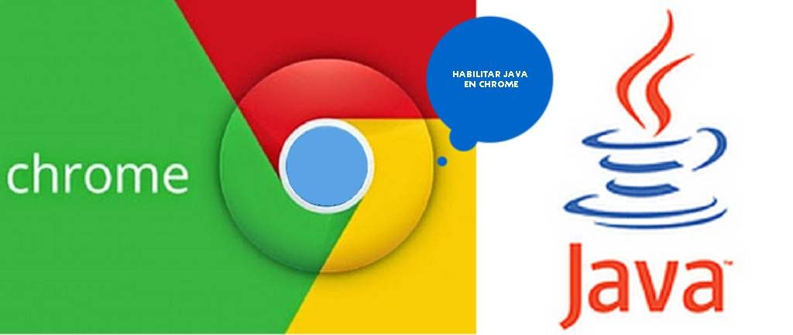

Lenguaje Applet Java
Caracteristicas
Un applet Java es un applet escrito en el lenguaje de programación Java. Los applets de Java pueden ejecutarse en un navegador web utilizando la Java Virtual Machine (JVM), o en el AppletViewer de Sun.
Entre sus características podemos mencionar un esquema de seguridad que permite que los applets que se ejecutan en el equipo no tengan acceso a partes sensibles
